Ship Supply Services
Montenegro
Select a category below to explore the complete range of marine supply services — from fresh provisions to technical spare parts — available at the Port of Bar, Kotor, Zelenika, Tivat and all Montenegrin ports and anchorages.
A Small Adriatic Nation, a Strategic Maritime Gateway
Montenegro is a small sovereign country in Southeastern Europe, situated on the Adriatic Sea along the Balkan Peninsula — and despite its compact size, it sits at a strategic crossroads between the Mediterranean and Central Europe. Famous for its dramatic mountainous landscapes, the UNESCO-listed Bay of Kotor, medieval coastal towns and some of the cleanest waters in the Mediterranean, its economy leans heavily on tourism, shipping and port operations. The Port of Bar is the country's primary commercial seaport, while Kotor, Zelenika and Tivat serve a mix of cargo, ferry and cruise traffic along the Adriatic coast — together making Montenegro a reliable and increasingly important destination for vessel supply in the region.
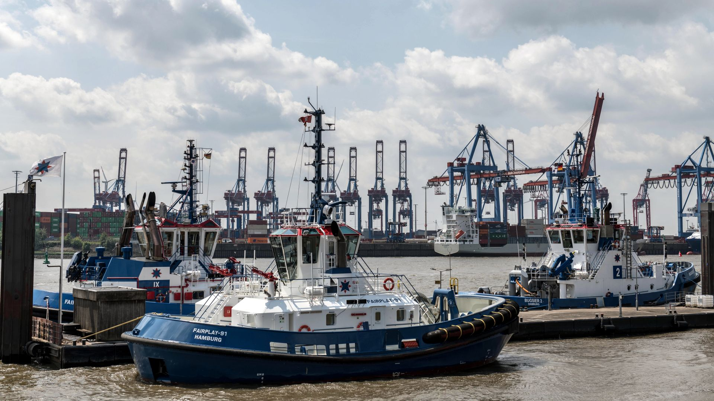
Ports We Serve in Montenegro
These are our key Montenegrin ports — and this list is not exhaustive. We can coordinate vessel supply to additional ports and anchorages across the Adriatic on request.
Bar
Montenegro's largest commercial seaport — handling container, bulk and general cargo with full vessel supply capability.
Kotor
Historic UNESCO-listed bay port welcoming cruise vessels, yachts and coastal cargo traffic.
Zelenika
Deep-water Bay of Kotor port serving ferries, cargo vessels and Adriatic transit traffic.
Tivat
Coastal port and marina serving yachts, cruise vessels and commercial traffic in the Bay of Kotor.
Complete Vessel Supply Services
Ship Chandler Montenegro provides the full range of marine supply services at Bar, Kotor, Zelenika, Tivat and all Montenegrin ports. Explore each category below.
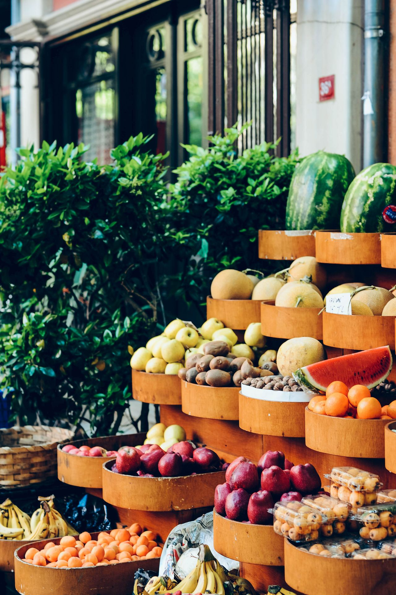
Ship Provisions Supply Montenegro
Ship Chandler Montenegro delivers fresh, chilled, frozen and dry provisions to support vessel crews and galley requirements across all Montenegrin ports, including Bar, Kotor, Zelenika and Tivat. Provision orders are prepared according to crew nationality, vessel requirements, requested brands and pack sizes. High-quality food provision supply ensures the crew remains well-fed and operational throughout the voyage. Sourcing reliable ship provisions in Montenegro requires careful attention to cold-chain logistics and shelf-life management. The procurement process guarantees that all food stores — including fresh produce, meats and dry goods — meet stringent hygiene standards before delivery to the vessel. Fast coordination of food supply directly to the berth or anchorage minimises disruption to the vessel's schedule.
- Fresh fruits & vegetables, meat, poultry and seafood
- Dairy products, eggs and bakery products
- Rice, pasta, flour, cereals and dry provisions
- Canned products and frozen food
- Beverages, drinking water, juices and soft drinks
- Coffee, tea, condiments, spices and sauces
- International & local food products, special dietary items upon request
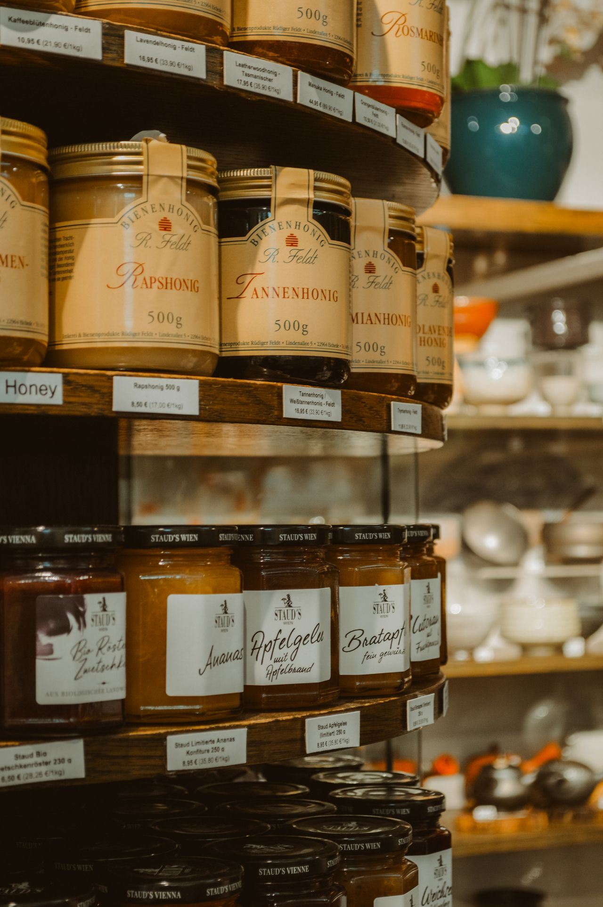
Bonded Stores Supply
Ship Chandler Montenegro supplies bonded and duty-free provisions in line with applicable customs and Montenegrin port regulations. We coordinate the necessary customs clearances and delivery permits directly to the vessel at Bar, Kotor, Zelenika and Tivat. A reliable bond store supply chain ensures crew welfare items and duty-free goods are delivered efficiently and compliantly. Navigating local customs procedures for bonded stores requires experienced coordination. Our vessel supply service manages all necessary documentation to guarantee a smooth transfer of tobacco, confectionery and personal care items. Strict adherence to port authority guidelines ensures that the bond store supply process is seamless, allowing the crew to receive essential welfare products without delays during the port call.
- Tobacco products and confectionery
- Soft drinks and beverages
- Personal care products
- Crew welfare items
- Other bonded products requested by the vessel
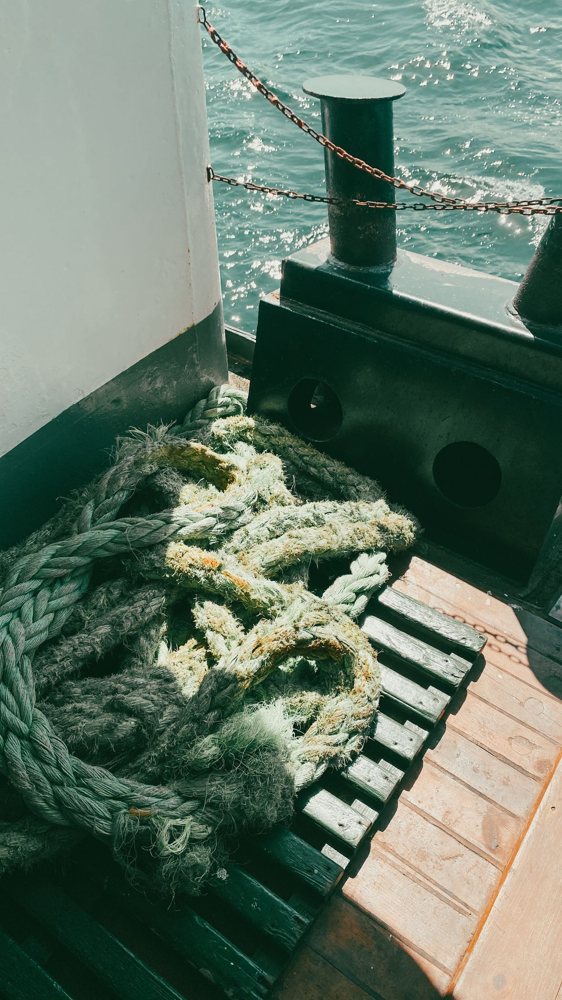
Deck Stores Supply
Ship Chandler Montenegro sources and supplies a wide range of deck consumables and equipment for vessels calling at Bar, Kotor, Zelenika and Tivat. Deck store products can be quoted according to IMPA references, dimensions, SWL, material specifications, required certificates or preferred manufacturers. High-quality deck supplies are essential for safe mooring, cargo handling and routine vessel maintenance. Ensuring the availability of heavy-duty mooring ropes, wire ropes and lifting accessories is critical for maritime safety. Our ship chandler service verifies that all deck equipment meets required load capacities and safety certifications. From marine paints and coatings to cargo securing materials, the comprehensive deck supply ensures the vessel is fully equipped for challenging operational environments.
- Mooring ropes, hawsers, wire ropes, shackles, turnbuckles
- Chains, lifting accessories and cargo securing materials
- Hoses, couplings and marine hardware
- Marine paints, coatings, brushes, rollers and tarpaulins
- Cleaning equipment and deck maintenance tools
- Safety signs, hand tools, PPE and working equipment
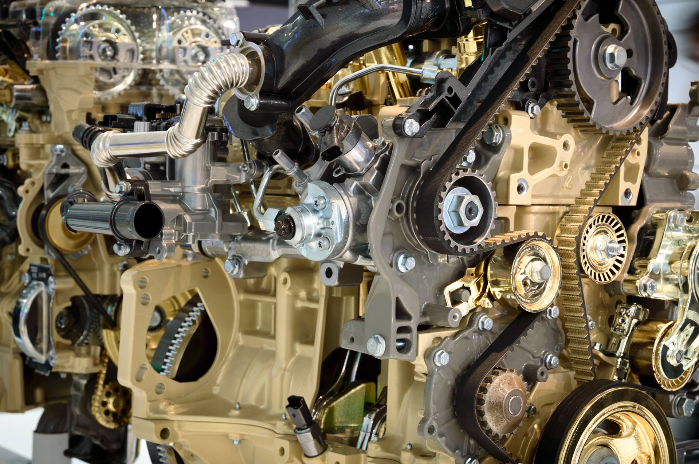
Engine Stores Supply
Ship Chandler Montenegro supports engine departments with routine consumables, tools and technical materials for main engines, generators and auxiliary machinery at Bar, Kotor, Zelenika and Tivat. For technical requirements, customers are encouraged to provide maker, model, serial number, part number, drawings or photographs to ensure accurate sourcing. Quality engine stores and spare parts minimise downtime and maintain vessel operational efficiency. Sourcing reliable engine-room consumables, such as filters, gaskets and mechanical seals, is vital for continuous vessel performance. Our technical procurement team assists in identifying exact machinery components, ensuring compatibility with onboard systems. Access to premium lubricants, hydraulic fittings and workshop consumables keeps the engine department fully operational during transit and port stays.
- Filters, gaskets, bearings, valves and mechanical seals
- Pumps, hydraulic hoses, fittings and hydraulic products
- Lubricants, greases and workshop consumables
- Measuring instruments, hand tools and power tools
- Fasteners, electrical materials and welding consumables
- Engine-room cleaning chemicals, pipes, fittings and flanges
- Selected machinery spare parts
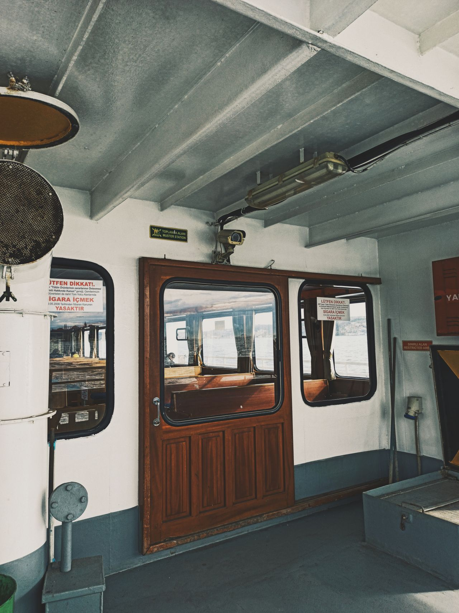
Cabin & Galley Stores
Ship Chandler Montenegro provides the everyday consumables and equipment required by the accommodation and catering departments on merchant vessels calling at Bar, Kotor, Zelenika and Tivat. Cabin and galley stores are sourced to ensure crew comfort and hygiene standards are maintained throughout the vessel's voyage. High-quality accommodation supplies, including bed linen, towels and mattresses, contribute significantly to crew morale. Our vessel supply service also ensures the galley is well-equipped with commercial-grade cookware, utensils and tableware. Providing essential cleaning products, laundry detergents and toiletries supports a sanitary living environment, allowing the crew to rest and recover effectively between shifts.
- Bed linen, towels, blankets, mattresses and pillows
- Tableware, cookware, kitchen utensils and galley equipment
- Cleaning products and laundry products
- Toiletries and cabin consumables
- Garbage bags and crew welfare products
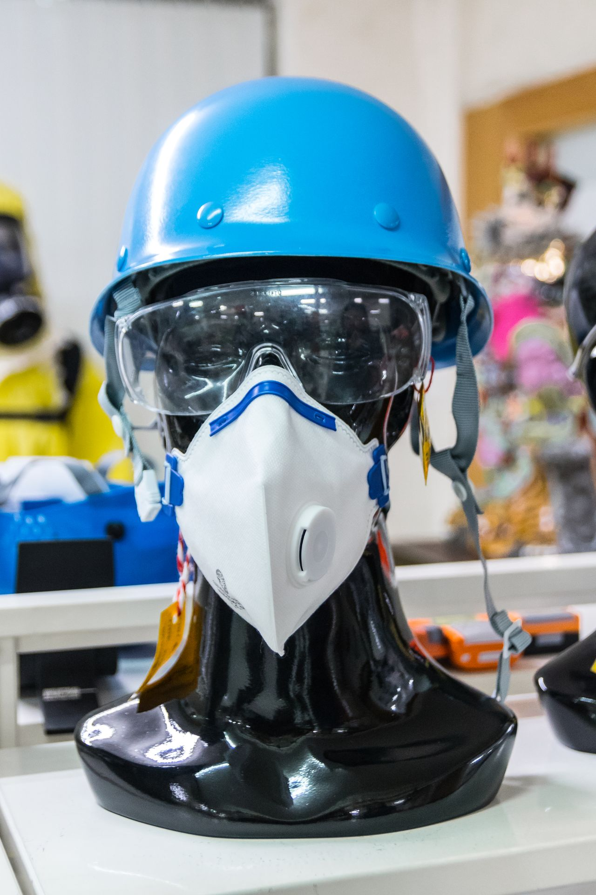
Safety & PPE Supply
Ship Chandler Montenegro supplies safety and personal protective equipment according to vessel requirements and international standards at Bar, Kotor, Zelenika and Tivat. Where certification is required, the applicable standard or certificate requirement should be specified in the RFQ. A comprehensive range of safety equipment and PPE ensures the well-being of the crew and compliance with maritime safety regulations. Our ship supply service prioritises the availability of certified safety gear, including hard hats, safety harnesses and fire-fighting related products. Sourcing durable coveralls, protective gloves and respiratory protection is essential for hazardous onboard tasks. Ensuring strict adherence to SOLAS and international safety standards protects the crew and mitigates operational risks at sea.
- Safety helmets, safety shoes and coveralls
- Protective gloves, safety goggles and face shields
- Respiratory protection and safety harnesses
- Life-saving equipment and fire-fighting related products
- Safety signs, tapes and first-aid products

Electrical Stores Supply
Ship Chandler Montenegro sources electrical products and consumables for deck, engine-room and accommodation requirements for commercial vessels at Bar, Kotor, Zelenika and Tivat. High-quality electrical stores, including marine lamps, cables and circuit breakers, ensure the vessel's electrical systems remain operational and safe. Our ship supply service provides essential electrical consumables, such as fuses, relays and contactors, to support routine maintenance and emergency repairs. Sourcing specialised marine electronics and robust electrical tools allows the engineering team to troubleshoot and resolve technical issues efficiently. Reliable electrical supply ensures uninterrupted power and navigation capabilities throughout the voyage.
- Marine lamps, LED lighting, cables and wires
- Plugs, sockets, circuit breakers and fuses
- Contactors, relays and switches
- Batteries, electrical tools and cable accessories
- Electrical consumables
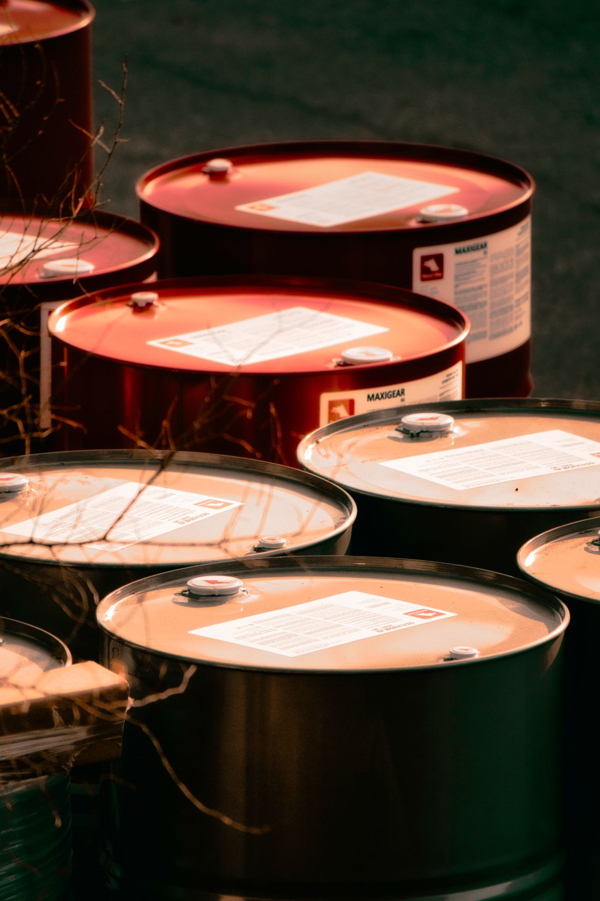
Marine Chemicals Supply
Ship Chandler Montenegro supplies marine and industrial chemicals for vessel maintenance, water treatment and operational requirements at Bar, Kotor, Zelenika and Tivat. Product specifications and Safety Data Sheets (SDS) can be provided where applicable. We source quality marine chemicals, including degreasers and tank cleaning products, to maintain vessel hygiene and operational readiness. Our vessel supply service ensures the availability of specialised descaling chemicals and water-treatment solutions essential for engine-room efficiency. Providing safe and effective maintenance chemicals, along with necessary documentation, supports the crew in performing critical cleaning and preservation tasks. Reliable access to marine chemicals maintains a safe and compliant working environment onboard.
- Cleaning chemicals and degreasers
- Rust removers and descaling chemicals
- Tank cleaning products
- Water-treatment chemicals
- Maintenance chemicals and engine-room cleaning products
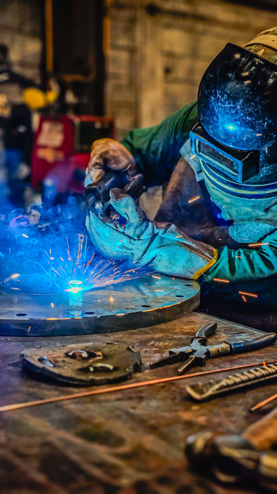
Welding Equipment & Consumables
Ship Chandler Montenegro sources a comprehensive range of welding and cutting materials for onboard maintenance and repair operations at Bar, Kotor, Zelenika and Tivat. Quality welding equipment, including electrodes, wires and cutting discs, supports the vessel's crew in performing essential repairs and fabrication tasks safely and effectively. Our ship supply service ensures the availability of robust welding accessories, regulators and personal protective equipment. Sourcing reliable cutting and welding equipment is critical for structural maintenance and emergency repairs at sea. Access to industrial and marine gases, subject to local regulations, ensures the vessel's workshop remains fully operational for critical fabrication work.
- Welding electrodes and welding wire
- Cutting discs and grinding discs
- Welding accessories and welding PPE
- Regulators and hoses
- Cutting and welding equipment
- Industrial and marine gases subject to local availability and regulations
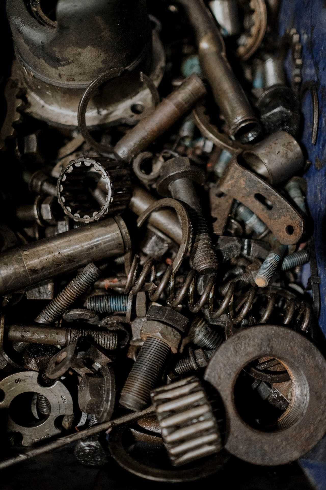
Marine Spare Parts & Technical Procurement
Ship Chandler Montenegro assists with standard and non-standard marine spare parts and technical equipment at Bar, Kotor, Zelenika and Tivat. For faster identification, please provide maker, equipment model, serial number, OEM part number, IMPA reference, dimensions, drawings or clear photographs. Sourcing quality marine spare parts for main engines, pumps and compressors is critical to minimising vessel downtime and ensuring operational reliability. Our technical procurement service specialises in identifying exact replacement components, including electric motors, refrigeration parts and hydraulic equipment. Reliable access to OEM and alternative spare parts supports the engineering department in executing timely overhauls and repairs, keeping the vessel compliant and operational.
- Main and auxiliary engine parts, pump components, compressor parts
- Electric motors, refrigeration components and hydraulic components
- Navigation equipment and communication equipment
- Marine electronics and electrical components
- Industrial equipment
- OEM and alternative spare parts
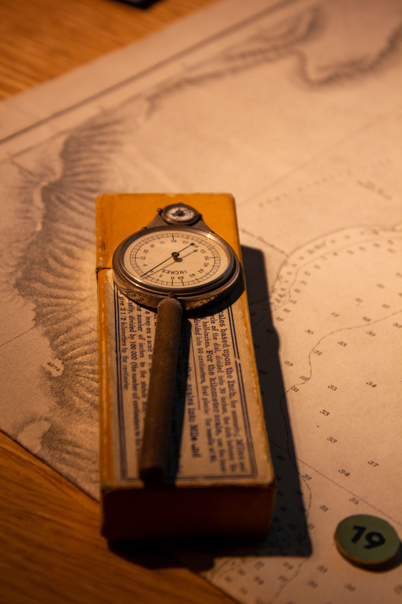
Nautical Charts & Publications
Ship Chandler Montenegro assists vessels with nautical charts, marine publications and operational reference materials required for their voyage at Bar, Kotor, Zelenika and Tivat. Access to up-to-date nautical charts and publications is essential for safe navigation and compliance with international maritime regulations. Our ship supply service provides official vessel logbooks and record books to ensure mandatory documentation is accurately maintained. Sourcing the latest IMO, SOLAS, MARPOL and STCW publications guarantees the vessel operates within current legal frameworks. Reliable supply of navigational notices and flag sets supports safe and efficient global transit.
- Admiralty nautical charts
- IMO, SOLAS, MARPOL & STCW publications
- Official vessel logbooks and record books
- Marine navigational notices and flag sets
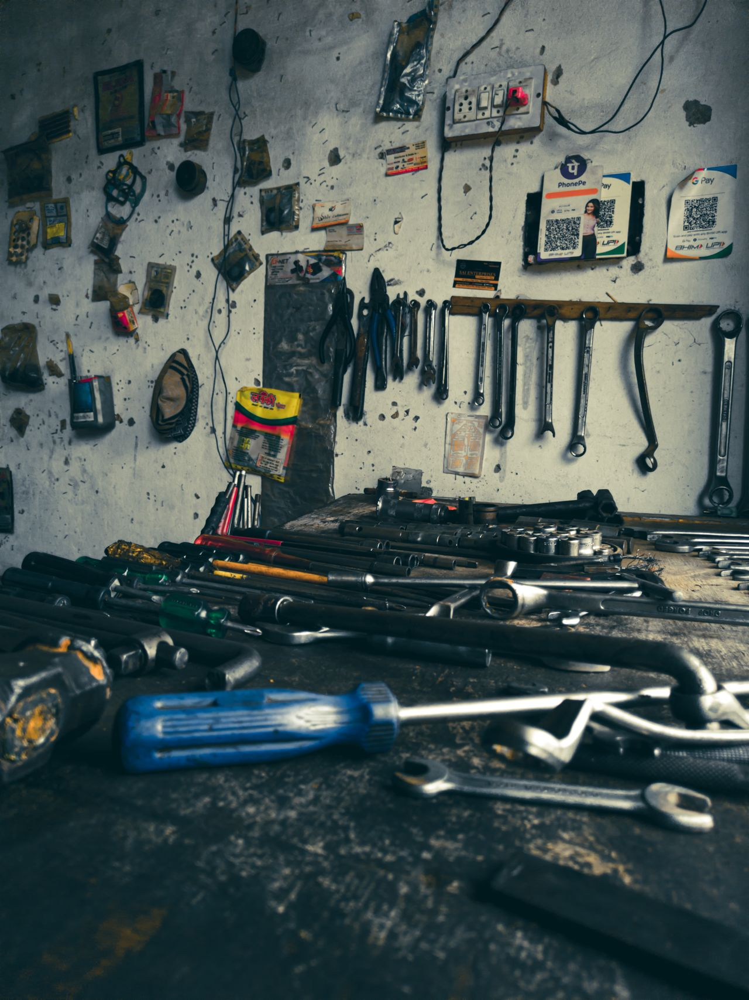
Tools & Marine Hardware
Ship Chandler Montenegro supplies hand tools, power tools, cutting tools, measuring equipment, fasteners and general marine hardware for routine maintenance and emergency repairs at Bar, Kotor, Zelenika and Tivat. We ensure quality tools and marine hardware are readily available to support the vessel's crew in maintaining operational efficiency and safety. Our vessel supply service provides durable hand tools and precision measuring equipment essential for engine-room and deck tasks. Sourcing high-grade fasteners, drill bits and abrasives ensures the workshop is prepared for challenging repair jobs. Access to professional-grade hardware and power tools enhances the crew's ability to perform complex maintenance tasks efficiently.
- Hand tools and power tools
- Cutting tools and measuring equipment
- Fasteners
- General marine hardware

Urgent Ship Supply in Montenegro
Ship Chandler Montenegro understands that vessel schedules can change quickly. For urgent requirements at Bar, Kotor, Zelenika and Tivat, we can coordinate procurement and delivery according to the vessel ETA, berth availability, port access and local operating conditions. Urgent enquiries should clearly indicate the required delivery deadline so that availability and logistics can be assessed immediately to prevent vessel delays. Our ship chandler service prioritises rapid response and efficient sourcing of critical items, including emergency provisions and technical spares. Coordination with port agents and launch boats ensures rapid dispatch to the vessel's berth or outer anchorage, resolving last-minute shortages quickly.
- Emergency ETA and short-call coordination
- Rapid sourcing within vessel port stay
- Berth and outer anchorage launch dispatch
- Direct boarding agent synchronisation
Request a Quote for Your Vessel
Tell us your requirements and our operations desk will respond promptly with a tailored quotation. Provisions, technical stores and bonded goods — coordinated in one place across all Montenegrin ports.